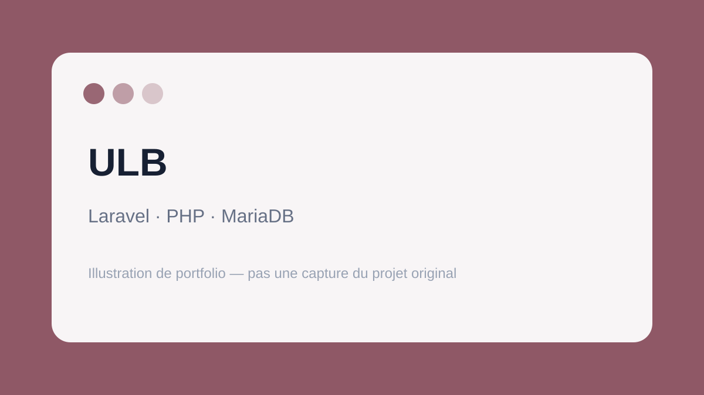

← Retour aux projets
Expérience backend
ULB — Faculté de Pharmacie
Travail réalisé sur une application web Laravel existante dans un environnement professionnel à la Faculté de Pharmacie de l'ULB.

Ce que ce projet m'a apporté
Cette expérience m'a surtout appris à intervenir dans un projet que je n'avais pas créé moi-même : comprendre l'architecture existante, identifier un problème, travailler avec les données et proposer des corrections sans casser le reste de l'application.
Cette page reste volontairement générale et ne publie aucune donnée interne ou confidentielle liée au projet.